Projets et livrables selon Opquast V5
Présentation - Projets et livrables selon Opquast V5
Slide 1 sur 45 - L’utilisateur ne voit pas nos phases projet
Slide 1 - L’utilisateur ne voit pas nos phases projet
Un parcours en trois scènes continue : lecture, formulaire, résultat. Sous la ligne de parcours, des silhouettes métiers interviennent sans la découper.
Le service vu par l’utilisateur
- Saviez-vous qu’une maquette graphique impeccablement validée ne garantit absolument pas que l’utilisateur final pourra soumettre un formulaire sans erreur ?
- Pour l’utilisateur, les sprints, les réunions de cadrage et les jalons de livraison sont invisibles, car il ne perçoit qu’un service interactif global.
- Lorsque le système échoue, peu importe que la cause soit un oubli dans les spécifications, un bug dans le code ou une mauvaise saisie dans le CMS.
- Le parcours est continu et les contributions sont multiples.
Objectifs de la leçon
- Cette leçon adopte la démarche Opquast V5 pour comprendre comment les exigences de qualité traversent les métiers et comment se construisent les preuves de conformité.
- Vous saurez distinguer la circulation d’une exigence de la construction d’une preuve de qualité.
- Vous saurez différencier les quatre notions clés que sont la phase, le livrable, le contrôle et la trace.
- Vous saurez naviguer dans la cartographie des 59 livrables de projet répartis en 12 familles.
- Vous saurez appliquer les règles Opquast 234, 77, 69, 85 et 222 sur leurs supports d’examen appropriés.
Mémo oral
- Un parcours, plusieurs métiers.
Slide 2 - La qualité circule, la preuve se construit
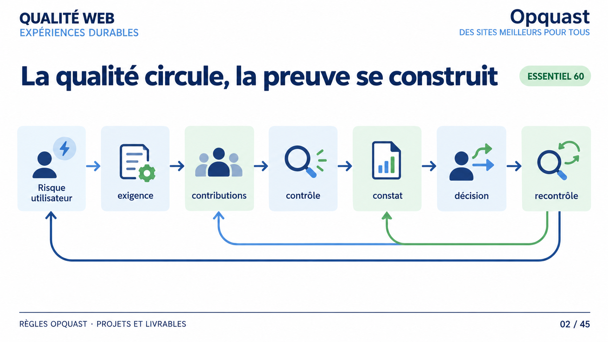
Une chaîne relie sept étapes : risque utilisateur, exigence, contributions, contrôle, constat, décision et recontrôle. Trois boucles repartent du recontrôle vers le constat, les contributions et le risque utilisateur ; aucun tampon « conforme » n’apparaît avant une vérification appropriée.
Ce qui circule
- Une règle peut guider les premières discussions, une spécification, une maquette, un gabarit ou une configuration.
- Ce cheminement ne constitue pas une validation progressive automatique.
- La chaîne présentée est une proposition pédagogique inspirée de la démarche qualité décrite dans le livre, et non une procédure obligatoire fixée par Opquast.
Ce qui construit la preuve
- Il faut distinguer ce qui a été prévu, ce qui a été produit et ce qui a été réellement contrôlé.
- Une exigence peut se perdre ou être considérée à tort comme déjà vérifiée.
- La démarche facilite le partage des exigences et la traçabilité des vérifications.
Mémo oral
- Circuler n’est pas prouver.
Slide 3 - La carte complète des 59 livrables
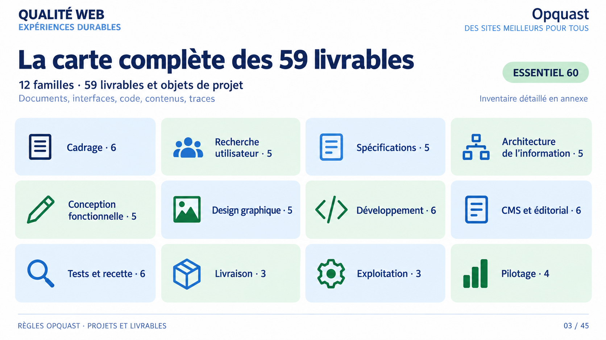
Une grille de douze cartes indépendantes présente les familles de livrables et leur nombre : cadrage, recherche utilisateur, spécifications, architecture de l’information, conception fonctionnelle, design graphique, développement, CMS et éditorial, tests et recette, livraison, exploitation et pilotage. Aucune flèche ne relie les cartes.
La carte des 59 livrables : une boîte à outils, pas un catalogue
- Pour prévenir les risques utilisateurs dès le début du projet, Opquast propose une cartographie de 59 livrables et objets de projet, structurés en 12 familles.
Les 12 familles
- Cadrage (6 objets) : note d’opportunité, expression de besoins, registre des risques …
- Recherche utilisateur (5 objets) : personas, cartographie de parcours, rapport de test …
- Spécifications (5 objets) : user stories, backlog, critères d’acceptation, matrice d’exigences …
- Architecture de l’information (5 objets) : arborescence, plan de contenu, taxonomie …
- Conception fonctionnelle (5 objets) : zoning, wireframe, prototype …
- Design graphique (5 objets) : maquette graphique, charte, design system, déclinaisons responsive …
- Développement (6 objets) : gabarit HTML, composants codés, configuration serveur …
- CMS et éditorial (6 objets) : modèles de saisie, contenus publiés, alternatives textuelles …
- Tests et recette (6 objets) : plan de tests, cahier de recette, registre d’anomalies, PV de recette …
- Livraison (3 objets) : note de version, plan de déploiement, dossier de transfert …
- Exploitation (3 objets) : journal des changements, tickets d’incident, plan de maintenance …
- Pilotage (4 objets) : matrice RACI, tableau de bord qualité, plan d’amélioration continue …
La règle d’or
- « Inventorier pour relier, pas pour imposer. »
- Ces 59 objets ne forment pas un planning rigide ni une liste de documents obligatoires.
- Ils constituent un répertoire d’outils.
- Face à un risque précis pour l’utilisateur, l’équipe choisit le support adapté pour anticiper le problème, par exemple en annotant une maquette.
- Elle identifie ensuite l’objet final sur lequel s’effectuera le contrôle réel, par exemple le code HTML de la page publiée.
Slide 4 - Phase, livrable, contrôle, trace : quatre notions
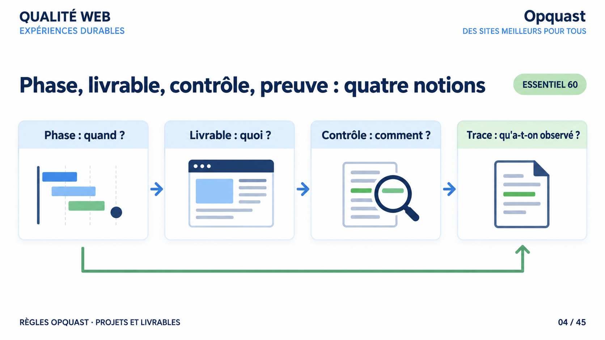
Quatre cartes reliées de gauche à droite présentent la phase, le livrable, le contrôle et la trace. Une ligne verte relie aussi la phase à la trace, pour rappeler que la trace documente ce qui a réellement été observé.
L’illusion de la validation
- Plus un projet avance, plus il est tentant de croire que sa qualité se valide automatiquement.
- Une intention formulée dans un cahier des charges ou dessinée sur un prototype reste une intention.
Quatre notions distinctes
- La phase répond à « Quand ? » en situant le travail dans le temps sans garantir son résultat.
- Le livrable répond à « Quoi ? » en désignant l’objet concret produit par une équipe.
- Le contrôle répond à « Comment ? » en observant et en évaluant un objet selon des critères rigoureux et répétables.
- La trace répond à « Qu’a-t-on observé ? » en documentant la date, la version, le périmètre, la méthode et le résultat.
Construire une preuve
- Circuler n’est pas prouver.
- La preuve naît lorsque l’objet rendu est vérifié dans son contexte réel d’utilisation.
- Le mot « preuve » désigne ici une trace contextualisée et non une certification globale du service.
Mémo oral
- La phase situe ; le contrôle constate.
Slide 5 - Les tags de phase ne sont pas un calendrier
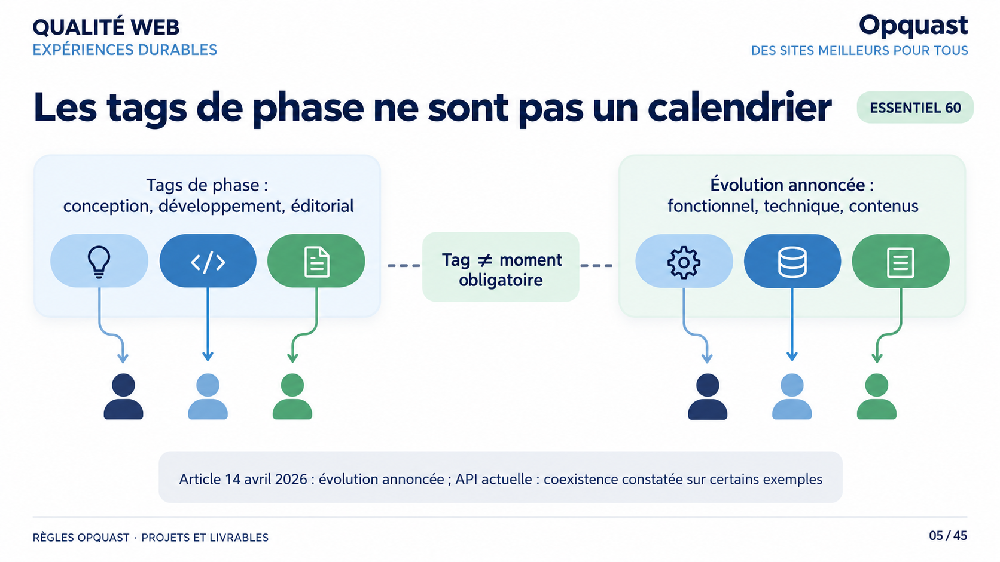
Deux groupes de trois tags sont séparés par « Tag ≠ moment obligatoire ». Chaque groupe relie ses trois pictogrammes à trois silhouettes sans attribuer un tag à un métier exclusif. Un bandeau précise : « Article 14 avril 2026 : évolution annoncée ; API actuelle : coexistence constatée sur certains exemples ».
Lire les tags Opquast
- Les tags de conception, de développement ou d’éditorial servent à classer les règles dans le référentiel.
- Un tag ne constitue ni un calendrier obligatoire ni une attribution exclusive à un métier.
- Une exigence peut appeler des contributions à plusieurs moments et sur plusieurs supports.
Suivre l’évolution du classement
- Dans un article du 14 avril 2026, Opquast a annoncé le remplacement des tags liés aux phases par une classification fonctionnelle, technique et contenus.
- Les fiches API vérifiées montrent encore des libellés de familles différents selon les règles.
- Il ne faut confondre ni l’annonce avec un déploiement achevé ni le classement avec un planning.
Mémo oral
- Un tag classe, il ne planifie pas.
Slide 6 - Choisir les règles d'après le risque et l'applicabilité
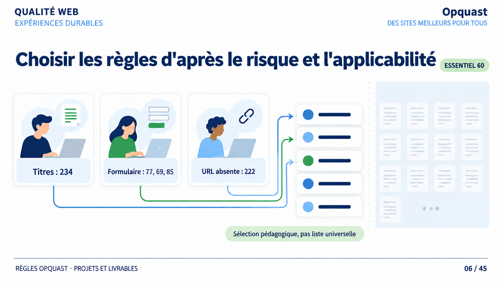
Trois cartes de situations utilisateur sont reliées à une sélection de cinq règles. Les 59 livrables restent en arrière-plan comme une bibliothèque et la sélection est annoncée comme pédagogique, non universelle.
Trois risques à étudier
- Nous étudierons le risque de ne pas se repérer dans un contenu.
- Nous étudierons le risque de ne pas comprendre ou confirmer un formulaire.
- Nous étudierons le risque d’obtenir une réponse incohérente pour une ressource absente.
- Nous mobiliserons cinq règles officiellement vérifiées pour examiner ces situations.
Choisir le bon contrôle
- Ces exemples servent l’enseignement et ne constituent pas un classement Opquast de la thématique « phases projet ».
- Le contrôle officiel porte chaque fois sur un objet différent.
- Une règle non applicable mobilise inutilement l’équipe, tandis qu’une règle applicable oubliée laisse subsister un risque.
- L’annexe complète ces exemples par une cartographie plus large des livrables.
Mémo oral
- Choisir selon le risque, vérifier selon l’objet.
Slide 7 - Je ne retrouve pas ma section
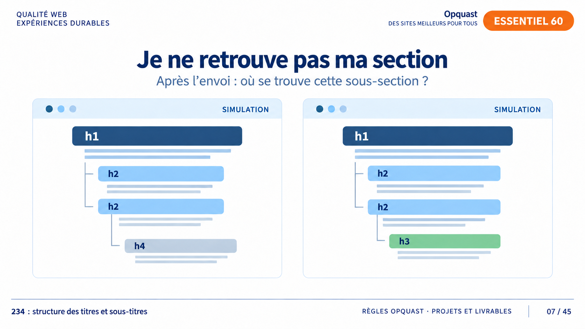
Deux plans simulés d'une page « Préparer sa demande » : h1→h2→h2→h4 et h1→h2→h2→h3. La sous-section directe de « Déposer le dossier » est mise en évidence.
Étude de cas 1 : Structurer le contenu (Règle 234)
- Mettons cette méthode en pratique avec le cas d’une personne qui navigue sur une page éditoriale complexe.
- Si les sous-titres sont visuellement grands mais mal structurés dans le code, la navigation au lecteur d’écran devient un véritable labyrinthe.
- Examinons la Règle 234 (Formulation officielle) :
- « Le contenu de chaque page est organisé selon une structure de titres et sous-titres hiérarchisée. »
Circulation à travers les livrables de projet
- Voici comment cette exigence circule à travers les livrables de projet.
- Spécifications & Cahier des charges : On formule l’exigence opérationnelle, par exemple : « Les pages éditoriales doivent présenter une hiérarchie de titres sans saut de niveau ».
- Cela clarifie l’attente mais ne valide rien.
- Wireframe & Maquette graphique : Le designer organise visuellement la hiérarchie (h1, h2, h3).
- La maquette montre l’intention visuelle, pas le code HTML généré.
- Gabarit HTML & Modèle CMS : Le développeur intègre le gabarit.
- Le rédacteur saisit le contenu.
- Mais attention : une saisie éditoriale ultérieure peut introduire une sous-section en h4 juste après un h2, recréant ainsi le défaut !
Contrôle et périmètre
- Contrôle sur la page rendue : Le contrôle officiel ne porte ni sur le cahier des charges, ni sur la maquette, mais sur l’arbre de titres HTML effectivement généré dans le navigateur (h1 -> h2 -> h3).
- Avertissement sur le périmètre : Si vous contrôlez la page « Préparer sa demande » et validez son plan de titres, vous avez prouvé la conformité de cette page précise.
- Cela ne prouve absolument pas que l’ensemble du site est conforme !
Slide 8 - Transformer la règle 234 en exigence de projet
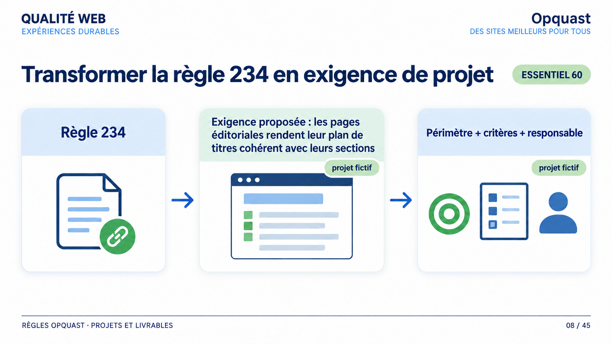
Trois cartes sont reliées par des flèches : la règle 234, une exigence proposée, puis le périmètre, les critères et le responsable. Les deux éléments inventés pour l’exercice portent la mention « projet fictif ».
De la règle à l’exigence
- Le libellé officiel de la règle 234 reste notre référence :
- « Le contenu de chaque page est organisé selon une structure de titres et sous-titres hiérarchisée. »
- Dans les spécifications et le cahier des charges, nous formulons l’exigence opérationnelle suivante : « Les pages éditoriales doivent présenter une hiérarchie de titres sans saut de niveau ».
- Nous précisons les types de pages concernés, les personnes qui produisent le contenu et ce que devra montrer la page rendue.
Portée de la spécification
- Les critères d’acceptation appliquent la règle au contexte du projet sans remplacer son texte officiel.
- Cette formulation rend l’attente transmissible aux métiers et évite de découvrir le sujet trop tard.
- Sans attente précise, une page mal structurée peut être livrée sans que personne n’ait prévu son contrôle.
- Une exigence formulée ne valide pas encore le résultat.
Mémo oral
- Spécifier n’est pas valider.
Slide 9 - Le prototype anticipe, la maquette transmet
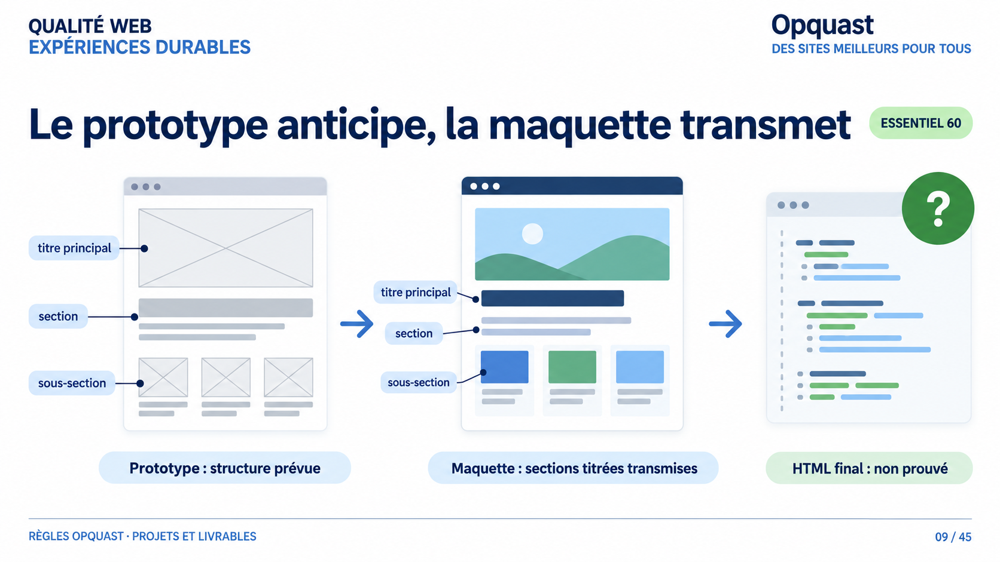
Un wireframe puis une maquette graphique du même contenu, avec annotations « titre principal », « section », « sous-section ».
Anticiper par la conception
- Le wireframe et le prototype permettent de discuter la place et l’enchaînement des sections.
- La maquette graphique organise visuellement la hiérarchie et peut annoter les niveaux de titres attendus comme h1, h2 et h3.
- Ces supports peuvent révéler tôt un plan incohérent.
Limite des supports intermédiaires
- Une maquette montre une intention visuelle et non le code HTML reçu par l’utilisateur.
- L’exigence circule dans les livrables, mais chacun n’en montre qu’une partie.
- La hiérarchie prévue peut se perdre lors du passage d’un métier à l’autre.
Mémo oral
- Voir l’intention n’est pas voir le HTML.
Slide 10 - Le gabarit et le CMS matérialisent, le contenu peut changer
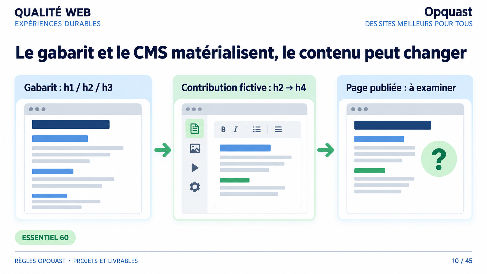
Gabarit générant la bonne structure ; éditeur CMS avec une sous-section saisie en h4 ; rendu final marqué d'un point d'interrogation avant examen.
Matérialiser l’exigence
- Le développeur intègre le gabarit HTML, tandis que le CMS peut guider les contributeurs par des modèles de saisie ou des consignes.
- Une fois le gabarit produit, nous pouvons inspecter les titres qu’il génère.
Risque éditorial
- Une saisie ultérieure peut introduire une sous-section en h4 juste après un h2 et recréer le défaut.
- Un gabarit correct ne suffit pas, car il faut aussi considérer la personne qui publie le contenu et le résultat finalement rendu.
- La règle 234 vise la structure effective de chaque page et non l’intention isolée d’un composant.
Mémo oral
- Le gabarit aide, le contenu décide du rendu.
Slide 11 - Contrôler la page rendue et borner le constat
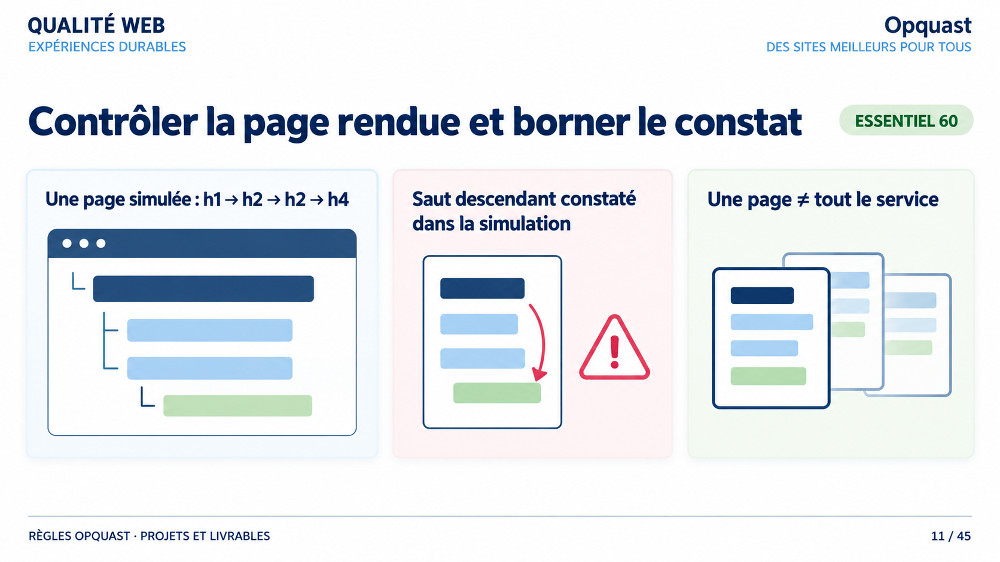
Vue du plan de titres, résultat du contrôle, mini-fiche objet/version/constat/limite ; aucune coche de conformité générale.
Objet du contrôle
- Le contrôle officiel porte sur le plan de titres HTML effectivement généré dans le navigateur, et non sur le cahier des charges ou la maquette.
- Sur la page fictive, le h1 correspond à la section principale, mais un saut descendant de h2 à h4 crée un écart.
- Dans un contrôle réel, nous examinerions aussi les titres masqués ou générés par JavaScript.
Portée du constat
- Valider le plan de titres de la page « Préparer sa demande » prouve la conformité de cette page précise sur ce critère.
- Ce résultat ne prouve pas la conformité de l’ensemble du site.
- Le constat doit toujours préciser l’objet, la version et le périmètre observés.
- Les validations antérieures de livrables intermédiaires ne remplacent pas ce contrôle.
Mémo oral
- La preuve a un périmètre.
Slide 12 - Je ne sais pas quoi saisir
Formulaire de contact fictif avec deux étiquettes éloignées de leurs champs, puis disposition corrigée. Aucun texte légal.
Étude de cas 2 : Interagir avec les formulaires (Règles 77, 69 et 85)
- Lorsqu’un utilisateur remplit un formulaire, trois risques distincts se présentent.
- L’écosystème Opquast y répond avec trois règles complémentaires qu’il ne faut jamais confondre.
1. La perception visuelle : Règle 77
- « Chaque étiquette de formulaire est visuellement rattachée au champ qu’elle décrit. »
- Ce qu’on examine : La proximité visuelle entre le texte et la zone de saisie à l’écran.
- Le support de contrôle : Le formulaire rendu sur toutes les tailles d’écran (desktop et mobile).
- Une maquette bureau ne prouve pas que l’étiquette reste proche du champ sur smartphone.
2. L’association technique : Règle 69
- « Chaque champ de formulaire est associé dans le code source à une étiquette qui lui est propre. »
- Ce qu’on examine : La présence des attributs HTML (
<label for="id_champ">ou ARIA) et la pertinence du libellé textuel. - Le support de contrôle : Inspection du DOM et revue manuelle du sens.
- Une capture d’écran visuelle est incapable de prouver cette liaison technique.
3. La confirmation de l’action : Règle 85
- « La soumission d’un formulaire est suivie d’un message indiquant la réussite ou non de l’action souhaitée. »
- Ce qu’on examine : Le retour d’information fourni à l’utilisateur après l’envoi.
- Le support de contrôle : L’exécution complète du parcours de soumission.
- Voir un écran de succès statique dans un prototype ne prouve pas que le serveur renverra ce message lors d’un envoi réel.
- Conclusion : Ces trois règles illustrent parfaitement pourquoi un même écran nécessite des contrôles distincts selon le mécanisme ciblé.
Slide 13 - Règle 77 : rattachement visuel étiquette-champ
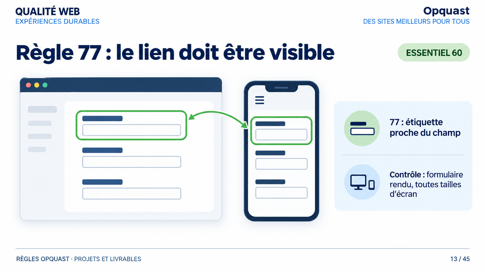
Un affichage sur ordinateur est relié à sa version mobile. Deux encadrés soulignent la proximité entre l’étiquette et le champ, puis le contrôle du formulaire rendu à toutes les tailles d’écran ; aucun code HTML n’est présenté comme preuve.
Règle 77 : perception visuelle
- « Chaque étiquette de formulaire est visuellement rattachée au champ qu’elle décrit. »
- La règle 77 vise une proximité visuelle non ambiguë et prévisible.
Objet du contrôle
- Nous examinons la proximité visuelle entre le texte et la zone de saisie à l’écran.
- Le support de contrôle est le formulaire réellement rendu sur toutes les tailles d’écran, notamment sur mobile.
- Une maquette de bureau ne prouve pas que l’étiquette restera proche du champ sur smartphone.
- Une association correcte dans le code ne remplace pas cette vérification visuelle.
Risque utilisateur
- Un utilisateur peut saisir au mauvais endroit ou devoir déchiffrer la correspondance entre les champs et leurs étiquettes.
Mémo oral
- 77 : proche à l’écran.
Slide 14 - Règle 69 : association étiquette-champ dans le code
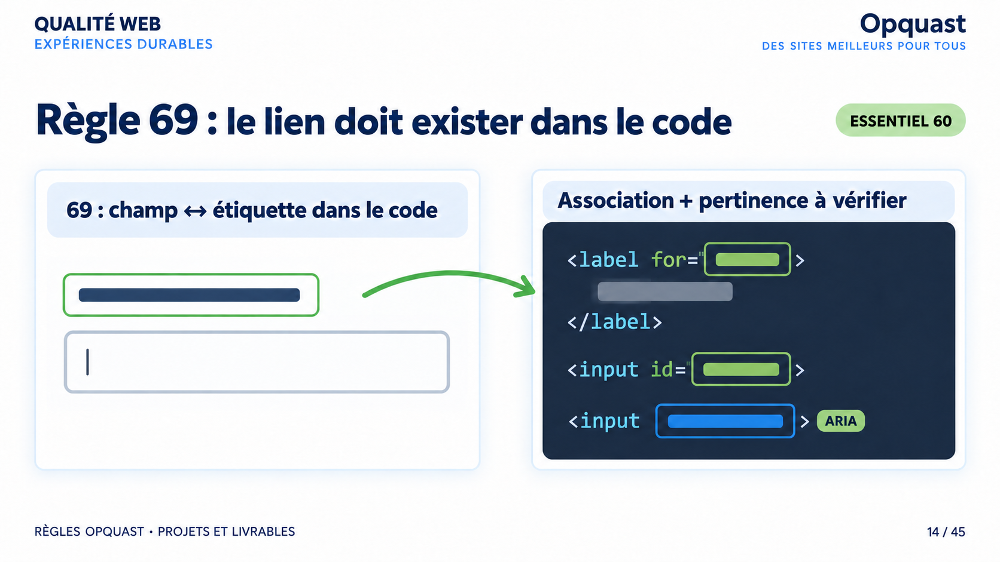
Formulaire rendu à gauche et extrait schématique de l'association HTML à droite : label[for] et input[id] correspondants ; option ARIA signalée.
Règle 69 : association technique
- « Chaque champ de formulaire est associé dans le code source à une étiquette qui lui est propre. »
- La règle 69 vise l’association de chaque champ à une étiquette qui décrit son rôle.
Objet du contrôle
- Nous examinons une association HTML comme
<label for="id_champ">ou une solution ARIA prévue par la fiche. - Nous contrôlons aussi manuellement la pertinence du libellé textuel.
- Le support de contrôle est le DOM complété par une revue du sens.
- Une capture d’écran ne peut pas prouver cette liaison technique, tandis qu’une liaison correcte ne prouve pas la proximité visuelle.
Risque utilisateur
- Un utilisateur d’aide technique peut ne pas connaître le rôle d’un champ, et un libellé imprécis peut aussi le tromper.
- Deux règles appellent deux preuves distinctes.
Mémo oral
- 69 : liée dans le code.
Slide 15 - Règle 85 : ai-je vraiment envoyé ma demande ?
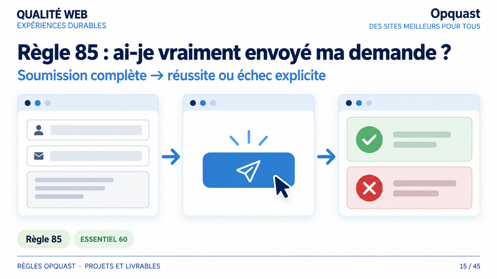
Trois panneaux reliés par des flèches montrent un formulaire, son bouton d’envoi, puis deux retours possibles représentés par une coche verte et une croix rouge. Aucun libellé de réussite ou d’échec n’est écrit dans ces retours.
Règle 85 : confirmation de l’action
- « La soumission d’un formulaire est suivie d’un message indiquant la réussite ou non de l’action souhaitée. »
- La règle 85 vise un retour immédiat et explicite sur le résultat de l’action.
Objet du contrôle
- Nous examinons le retour d’information fourni à l’utilisateur après l’envoi.
- Le support de contrôle est l’exécution complète du parcours de soumission.
- Un écran de succès statique dans un prototype ne prouve pas que le serveur renverra ce message lors d’un envoi réel.
- Une promesse de confirmation ne vaut pas une confirmation observée.
Risque utilisateur
- Une personne peut croire sa demande envoyée alors que l’opération a échoué, puis attendre inutilement.
Conclusion du cas
- Les règles 77, 69 et 85 montrent qu’un même écran nécessite des contrôles distincts sur l’affichage, l’association technique et le résultat de la soumission.
- Après l’action, dire le résultat.
Slide 16 - Règle 222 : une ressource absente doit répondre 404
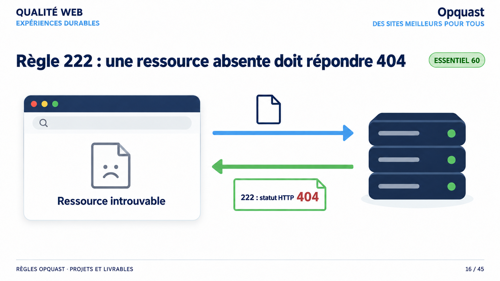
Adresse fictive inexistante ; serveur et navigateur échangeant une réponse HTTP avec code affiché distinctement.
Étude de cas 3 : Gérer l’absence et formaliser la preuve (Règle 222 et gouvernance)
- Que se passe-t-il lorsqu’un utilisateur saisit une adresse introuvable ?
- Examinons la Règle 222 (Formulation officielle) :
- « Le serveur envoie un code HTTP 404 pour les ressources non trouvées. »
Deux écrans identiques, deux réponses différentes
- Imaginez deux sites web affichant exactement le même écran visuel : une magnifique illustration avec le texte « Oups, page introuvable ».
- Le premier serveur renvoie la page avec un statut HTTP 200 (Succès).
- Le second serveur renvoie la page avec un statut HTTP 404 (Non trouvé).
- Visuellement, les deux pages sont identiques.
- Pourtant, le premier site échoue au contrôle de la règle 222 !
- Pourquoi ?
- Parce que les robots d’indexation et les navigateurs lisent le statut réseau, pas uniquement l’image affichée.
- Pour contrôler la règle 222, la capture d’écran est inutile : il faut interroger le serveur et inspecter la réponse réseau.
Clôturer la boucle : Constat, Décision et Recontrôle
- Une fois le contrôle effectué, comment gérer le résultat dans le projet ?
- La gouvernance qualité s’articule autour de quatre responsabilités distinctes :
- L’Évaluateur constate : Il rédige une fiche de constat précise (objet, version, méthode, résultat, limites).
- Le Responsable arbitre : Il décide de la priorité et attribue la correction.
- L’Équipe corrige : Elle modifie le code, le design ou le contenu.
- L’Évaluateur recontrôle : Il vérifie à nouveau l’objet modifié.
Attention
- Fermer un ticket dans un outil de suivi d’agilité ou valider une Definition of Done (DoD) ne constitue pas une preuve de conformité.
- Seul un recontrôle effectif sur l’objet corrigé permet de valider le résultat.
Slide 17 - Même page d'erreur, deux statuts différents
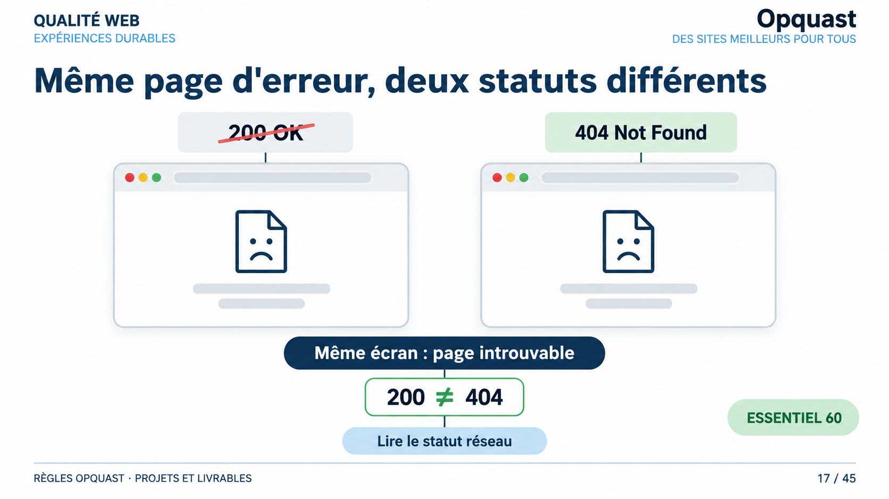
Deux fenêtres de navigateur affichent le même écran de page introuvable. La première est associée à « 200 OK » barré, la seconde à « 404 Not Found ». Sous les fenêtres, le visuel rappelle que 200 et 404 sont différents et qu’il faut lire le statut réseau.
Même écran, réponses différentes
- Imaginons deux sites qui affichent exactement le même écran avec le texte « Oups, page introuvable ».
- Le premier serveur renvoie un statut HTTP 200, qui signifie « Succès ».
- Le second serveur renvoie un statut HTTP 404, qui signifie « Non trouvé ».
- Visuellement, les deux pages sont identiques, mais la première échoue au contrôle de la règle 222.
Le contrôle du statut
- Les navigateurs et les outils d’indexation lisent le statut réseau, pas seulement le contenu affiché.
- Une capture d’écran est inutile pour ce contrôle, car il faut demander une adresse inexistante et inspecter la réponse du serveur.
- La règle 222 exige le statut 404 réellement renvoyé.
Mémo oral
- Ne pas confondre l’écran et la réponse.
Slide 18 - Une règle circule différemment selon son objet
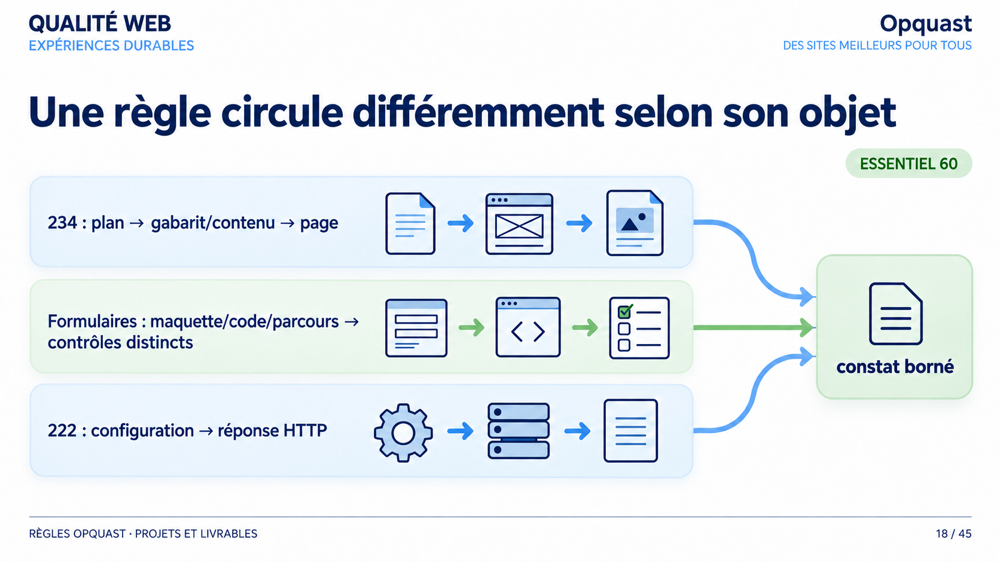
Trois chaînes distinctes relient les objets des règles 234, 77, 69, 85 et 222 à leurs contrôles, puis convergent vers « constat borné », sans présenter les maillons comme obligatoires pour chaque règle.
Trois objets, trois contrôles
- Pour la structure éditoriale, la contribution dans le CMS peut modifier le résultat publié.
- Pour le formulaire, le rendu visuel, le code et la soumission exigent trois examens distincts.
- Pour une ressource absente, la réponse HTTP est décisive.
Une preuve située
- Nous ne pouvons pas plaquer un calendrier unique sur la checklist.
- Pour chaque règle, nous pouvons en revanche décrire les livrables utiles, le contrôle officiel et les limites de ce contrôle.
- Une équipe peut conclure trop tôt si elle examine le mauvais support.
- Le choix du support permet de documenter plus précisément ce que nous savons et ce que nous ignorons.
Mémo oral
- À chaque risque, son objet et sa preuve.
Slide 19 - Une trace utile ne cache pas ses limites
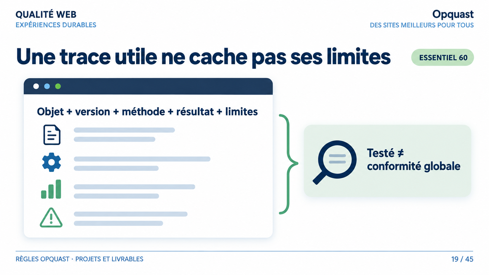
Une grande fiche regroupe les cinq éléments d’une trace : objet, version, méthode, résultat et limites. Une accolade la relie à un encadré indiquant « Testé ≠ conformité globale ».
Une trace contextualisée
- Une fois le contrôle effectué, la gouvernance qualité distingue le constat, la décision, la correction et le recontrôle.
- L’évaluateur commence par rédiger une fiche qui précise l’objet, la version, la méthode, le résultat et les limites.
- Écrire simplement « testé » ne suffit pas.
Une portée bornée
- Notre constat fictif concerne une page et son plan de titres, sans prouver l’état des autres pages ni l’absence de tous les risques.
- Un problème peut être minimisé ou amplifié si la portée du test n’est pas explicitée.
- Une trace contextualisée aide à arbitrer et à cibler les recontrôles.
Mémo oral
- Une preuve a toujours un périmètre.
Slide 20 - Constat, décision et recontrôle : trois responsabilités
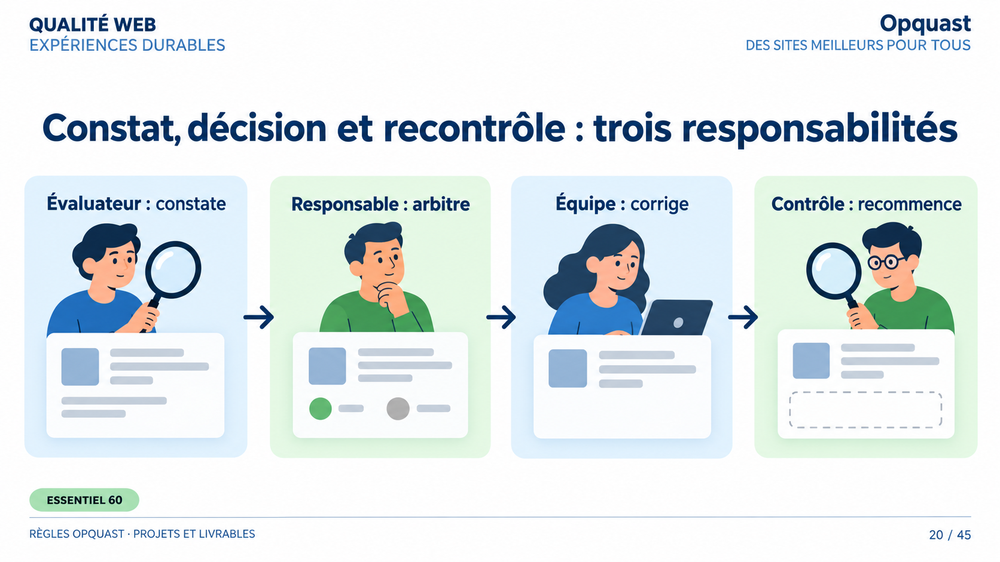
Quatre cartes reliées par des flèches montrent l’enchaînement : l’évaluateur constate, le responsable arbitre, l’équipe corrige et le contrôle recommence.
De la décision au recontrôle
- Le responsable arbitre la priorité et attribue la correction.
- L’équipe corrige le code, le design ou le contenu.
- L’évaluateur examine à nouveau l’objet modifié.
Ce que chaque étape permet
- Décider de corriger ne transforme pas l’ancien contrôle en succès.
- Corriger ne prouve pas que le défaut a disparu.
- Cette répartition illustre une organisation possible, sans constituer un modèle imposé à tous les projets.
- Si un composant partagé affecte plusieurs pages, le périmètre de reprise et de recontrôle doit être explicité.
- Le défaut peut subsister si la correction n’est ni décidée ni vérifiée.
Mémo oral
- Constater n’est pas décider ; corriger n’est pas recontrôler.
Slide 21 - Critères d'acceptation, recette et Definition of Done
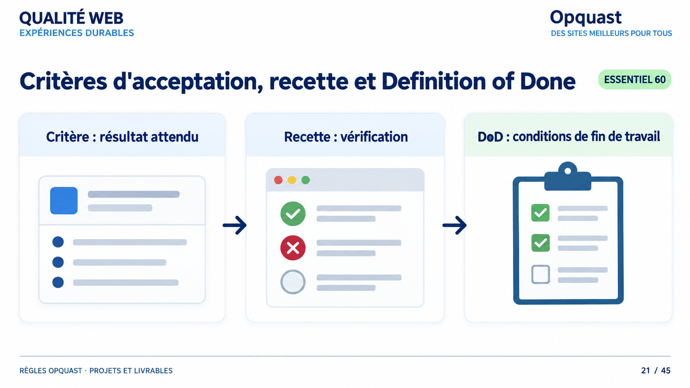
Trois cartes reliées par des flèches distinguent le critère comme résultat attendu, la recette comme vérification et la Definition of Done comme conditions de fin de travail.
Trois états distincts
- Les critères d’acceptation précisent le résultat attendu.
- La recette examine un livrable par rapport à ces attentes.
- La Definition of Done fixe les conditions choisies pour déclarer un travail terminé.
La preuve reste le recontrôle
- Une équipe peut inclure dans sa Definition of Done l’obligation de recontrôler avant de fermer un ticket.
- Fermer un ticket ou valider une Definition of Done ne constitue pas, en soi, une preuve de conformité.
- Seul un recontrôle effectif de l’objet corrigé permet d’observer le nouveau résultat.
- Une Definition of Done remplie n’est pas un audit général du service, et Opquast n’impose pas ces outils comme méthode projet universelle.
Mémo oral
- Terminé n’est pas conforme partout.
Slide 22 - Les frontières de la démarche Opquast
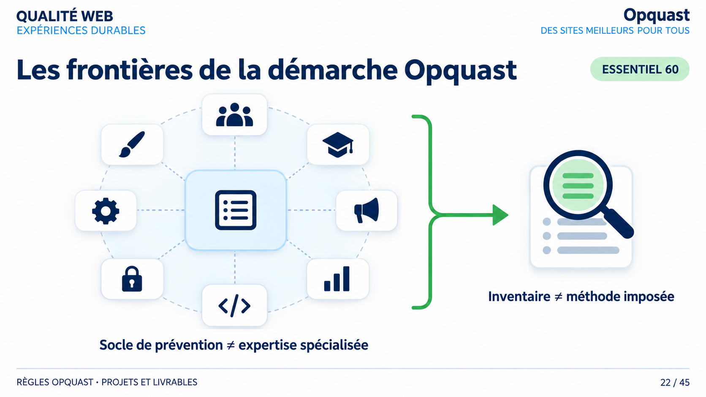
Un réseau de huit pictogrammes entoure une liste centrale. Une accolade et une flèche conduisent vers un document observé à la loupe. Deux limites sont écrites : « Socle de prévention ≠ expertise spécialisée » et « Inventaire ≠ méthode imposée ».
Le socle Opquast
- Opquast aide à prévenir des risques de base et à mieux travailler ensemble.
- Le référentiel apporte des règles de prévention générales et un langage commun, sans offrir une protection absolue.
Les limites de la démarche
- Opquast ne décrit ni tous les risques possibles ni une méthode projet universelle.
- Nos cinquante-neuf livrables forment une cartographie pédagogique, pas une liste d’obligations.
- Notre sélection de cinq règles ne remplace pas un audit spécialisé.
- Les résultats d’un audit doivent toujours être rapportés aux pages et aux fonctionnalités examinées.
- Une liste de livrables n’est pas, en soi, une preuve de qualité.
Mémo oral
- Un socle, pas une garantie totale.
Slide 23 - Cinq règles, cinq preuves différentes
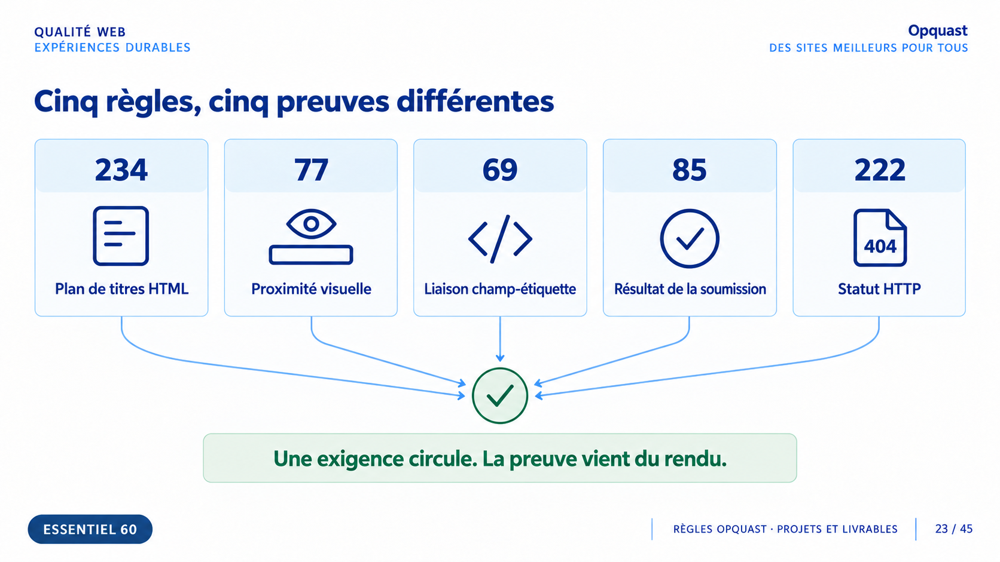
Cinq cartes alignées associent une règle à un objet de contrôle. La règle 234, « Le contenu de chaque page est organisé selon une structure de titres et sous-titres hiérarchisée », correspond au plan de titres HTML. La règle 77, « Chaque étiquette de formulaire est visuellement rattachée au champ qu’elle décrit », correspond à la proximité visuelle. La règle 69, « Chaque champ de formulaire est associé dans le code source à une étiquette qui lui est propre », correspond à la liaison champ-étiquette. La règle 85, « La soumission d’un formulaire est suivie d’un message indiquant la réussite ou non de l’action souhaitée », correspond au résultat de la soumission. La règle 222, « Le serveur envoie un code HTTP 404 pour les ressources non trouvées », correspond au statut HTTP. Des lignes relient les cinq cartes à une coche verte centrale. Un encadré vert conclut : « Une exigence circule. La preuve vient du rendu. »
Cinq règles, cinq objets de contrôle
- Règle 234 : « Le contenu de chaque page est organisé selon une structure de titres et sous-titres hiérarchisée. »
- Son objet de contrôle est le plan de titres HTML de la page rendue.
- Règle 77 : « Chaque étiquette de formulaire est visuellement rattachée au champ qu’elle décrit. »
- Son objet de contrôle est la proximité visuelle à toutes les tailles d’écran.
- Règle 69 : « Chaque champ de formulaire est associé dans le code source à une étiquette qui lui est propre. »
- Son objet de contrôle est la liaison entre le champ et son étiquette dans le code.
Deux contrôles par exécution
- Règle 85 : « La soumission d’un formulaire est suivie d’un message indiquant la réussite ou non de l’action souhaitée. »
- Son objet de contrôle est le résultat observé après l’exécution complète du parcours de soumission.
- Règle 222 : « Le serveur envoie un code HTTP 404 pour les ressources non trouvées. »
- Son objet de contrôle est le statut HTTP effectivement renvoyé par le serveur.
Le fil directeur
- La qualité circule et la preuve se construit : une exigence peut traverser la maquette, le code et les contenus, mais la preuve naît de l’observation de l’objet effectivement produit.
- Un livrable intermédiaire n’a de valeur pour la qualité que s’il permet d’anticiper un risque ou de préparer une vérification.
- L’utilisateur ne voit ni nos phases projet ni nos cahiers des charges, mais il perçoit directement les effets de nos choix.
À retenir
- Circuler n’est pas prouver : une exigence traverse les livrables, mais la preuve naît de l’observation de l’objet de contrôle effectivement produit.
- Une trace a toujours un périmètre : un test réussi valide un objet et une version spécifiques, jamais la conformité globale d’un service numérique.
- Une exigence circule.
- La preuve vient du rendu.
Slide 24 - Cadrage - clarifier avant de produire
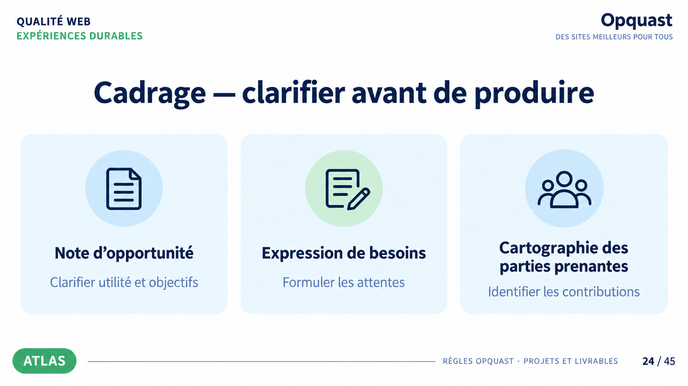
Trois cartes de même statut associent « Note d’opportunité » à « Clarifier utilité et objectifs » ; « Expression de besoins » à « Formuler les attentes » ; « Cartographie des parties prenantes » à « Identifier les contributions ». Les cartes sont juxtaposées sans flèche entre elles.
Phase 1 : Cadrage
- Avant de produire des écrans, posons-nous une question simple : à quoi le service doit-il servir pour les personnes concernées ?
Clarifier la finalité et les attentes
- Note d’opportunité : Fonction dans les sources : Document de cadrage amont destiné à clarifier l’utilité réelle et les objectifs d’un service numérique.
- Absence de terme dédié dans le glossaire.
- Expression de besoins : Fonction dans les sources : Document formulant les attentes et les contraintes essentielles des utilisateurs et du commanditaire.
- Absence de terme dédié dans le glossaire.
Identifier les acteurs et le cadre initial
- Cartographie des parties prenantes : Fonction dans les sources : Outil d’identification des contributions et des responsabilités de chaque acteur du projet.
- Absence de terme dédié dans le glossaire.
- Brief : Définition du Glossaire : « Document de départ décrivant les objectifs, la cible, le budget et le planning du projet ».
- Source : Glossaire Opquast, entrée « Brief ».
La limite du cadrage
- Si ces points restent flous, une équipe peut fabriquer un service impeccable sur le plan technique, mais mal ciblé.
- Ces documents aident à cadrer la discussion.
- Ils ne remplacent ni l’écoute des publics ni l’observation des usages réels.
Slide 25 - Cadrage - expliciter risques et exigences
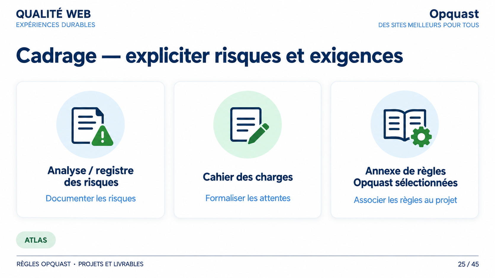
Trois cartes de même statut associent « Analyse / registre des risques » à « Documenter les risques » ; « Cahier des charges » à « Formaliser les attentes » ; « Annexe de règles Opquast sélectionnées » à « Associer les règles au projet ». Les cartes sont juxtaposées sans flèche entre elles.
Phase 1 : Cadrage
- Imaginons un formulaire qui ne confirme pas l’envoi.
- Dès le cadrage, nous pouvons décrire le risque que la personne croie sa demande transmise alors qu’elle a peut-être échoué.
Analyser les risques
- Analyse / registre des risques : Fonction dans les sources : Document de suivi recensant les risques utilisateurs, les actions préventives et les responsables associés.
- Absence de terme dédié dans le glossaire.
Formaliser les exigences
- Cahier des charges : Définition du Glossaire : « Document contractuel qui permet au maître d’ouvrage de faire savoir au maître d’œuvre ce qu’il attend de lui lors de la réalisation d’un projet, entraînant des pénalités en cas de non-respect. »
- « Il décrit précisément les besoins auxquels le prestataire ou le soumissionnaire doit répondre, et organise la relation entre les différents acteurs tout au long du projet. »
- Source : Glossaire Opquast, entrée « Cahier des charges ».
- Annexe de règles Opquast sélectionnées : Rôle dans les sources : Modèle d’annexe contractuelle au cahier des charges regroupant une sélection ciblée, notamment 65 règles fondamentales sur 245, pour formaliser et cadrer les exigences de qualité numérique dès la consultation.
- Source : Livre, section « Partie 2 - Démarche qualité ».
La preuve viendra plus tard
- Aucun de ces documents ne prouve que le formulaire fonctionne.
- Ils rendent l’exigence explicite et transmissible.
- Le contrôle devra être effectué sur le parcours réellement disponible.
- Un risque identifié devient une exigence.
Slide 26 - Recherche utilisateur - préparer et observer
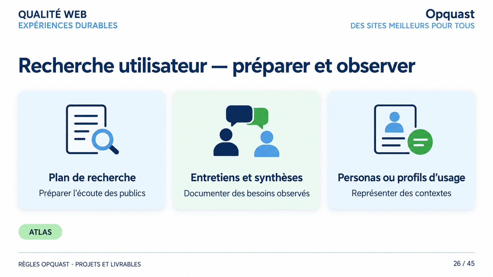
Trois cartes de même statut associent « Plan de recherche » à « Préparer l’écoute des publics » ; « Entretiens et synthèses » à « Documenter des besoins observés » ; « Personas ou profils d’usage » à « Représenter des contextes ». Les cartes sont juxtaposées sans flèche entre elles.
2. Phase : Recherche utilisateur
- Plan de recherche : Fonction dans les sources : Document organisant la démarche d’écoute, les questions et le ciblage des populations à enquêter.
- (Absence de terme dédié dans le glossaire).
- Entretiens et synthèses : Fonction dans les sources : Livrable documentant les méthodes, les verbatims et les besoins observés sur le terrain.
- (Absence de terme dédié dans le glossaire).
Personas ou profils d’usage
- Personas (ou profils d’usage) : Définition du Glossaire : « Les personas sont des profils types représentant les utilisateurs cibles d’un site web ou d’un service numérique.
- Ils synthétisent leurs caractéristiques, besoins, comportements et motivations afin de mieux comprendre les attentes des utilisateurs finaux ».
- (Glossaire Opquast, entrée « Personas »).
Slide 27 - Recherche utilisateur - parcours et tests
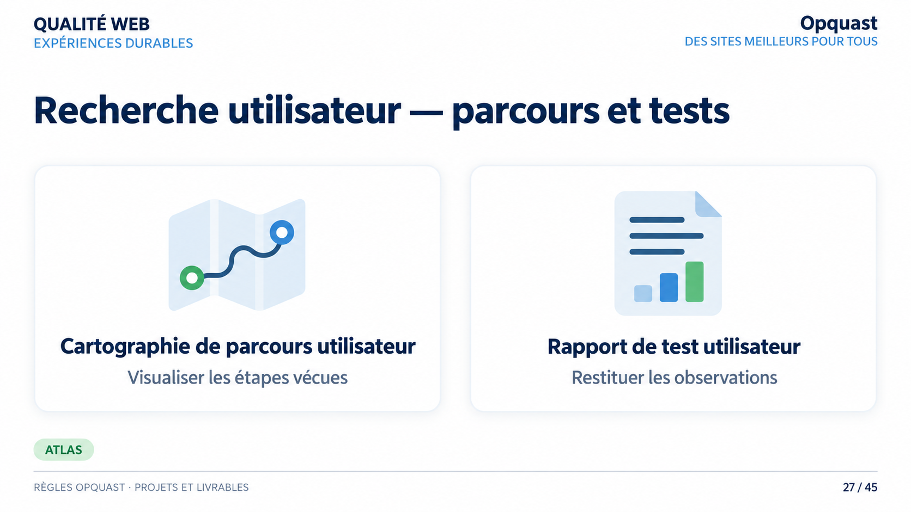
Deux cartes de même statut associent « Cartographie de parcours utilisateur » à « Visualiser les étapes vécues » ; « Rapport de test utilisateur » à « Restituer les observations ». Les cartes sont juxtaposées sans flèche entre elles.
2. Phase : Recherche utilisateur
- Cartographie de parcours utilisateur (User Journeys) : Fonction dans les sources : Représentation visuelle des étapes, des attentes et des points de friction vécus par l’usager avant, pendant et après l’utilisation du service.
- (Absence de terme dédié dans le glossaire).
Rapport de test utilisateur
- Rapport de test utilisateur : Définition du Glossaire : « Le test utilisateur est une phase d’évaluation ergonomique d’un site web ou d’une application au cours de laquelle un panel représentatif d’utilisateurs interagit avec le produit.
- L’objectif est d’identifier les problèmes de compréhension, de navigation, d’ergonomie ou d’usage avant le déploiement ».
- (Glossaire Opquast, entrée « Test utilisateur »).
Slide 28 - Spécifications - décrire et suivre
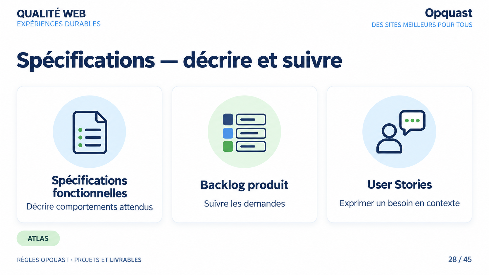
Trois cartes de même statut associent « Spécifications fonctionnelles » à « Décrire comportements attendus » ; « Backlog produit » à « Suivre les demandes » ; « User Stories » à « Exprimer un besoin en contexte ». Les cartes sont juxtaposées sans flèche entre elles.
3. Phase : Spécifications
- Spécifications fonctionnelles : Fonction dans les sources : Description détaillée des comportements attendus, des scénarios d’usage et des états de l’interface.
- (Absence de terme dédié dans le glossaire).
Décrire et suivre
- Backlog produit : Définition du Livre : Dans les méthodes agiles, liste priorisée de user stories représentant l’ensemble des demandes et fonctionnalités du projet (Livre, section « Partie 1 - Comprendre la qualité »).
- User Stories : Définition du Livre : Format privilégié en agile pour décrire une fonctionnalité à développer en adoptant le point de vue de l’utilisateur final (Livre, section « Partie 1 - Comprendre la qualité »).
Slide 29 - Spécifications - vérifier et tracer
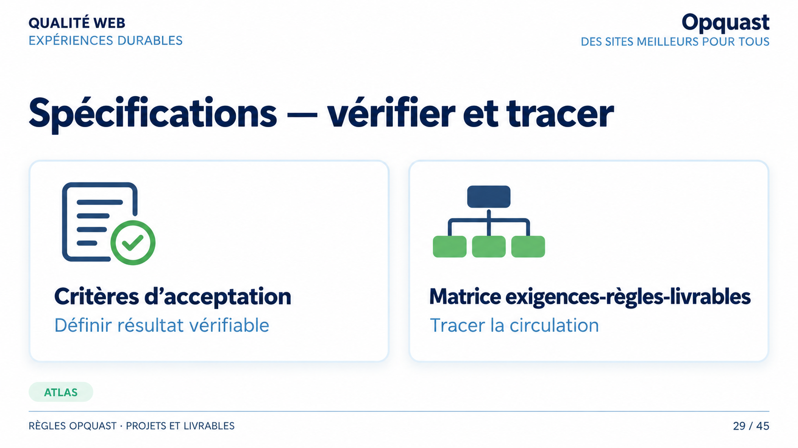
Deux cartes de même statut associent « Critères d’acceptation » à « Définir résultat vérifiable » ; « Matrice exigences-règles-livrables » à « Tracer la circulation ». Les cartes sont juxtaposées sans flèche entre elles.
3. Phase : Spécifications
- Critères d’acceptation (Acceptance Criteria) : Définition du Livre : Critères d’acceptation permettant de valider une user story du point de vue de l’utilisateur final en décrivant le résultat vérifiable attendu (Livre, section « Partie 1 - Comprendre la qualité »).
Tracer la circulation des exigences
- Matrice exigences-règles-livrables : Fonction dans les sources : Artefact méthodologique permettant de tracer la circulation des exigences de qualité entre les responsables et les livrables successifs du projet.
- (Storyboard Opquast, slide 03).
- (Absence de terme dédié dans le glossaire).
Slide 30 - Architecture de l’information - recenser et organiser
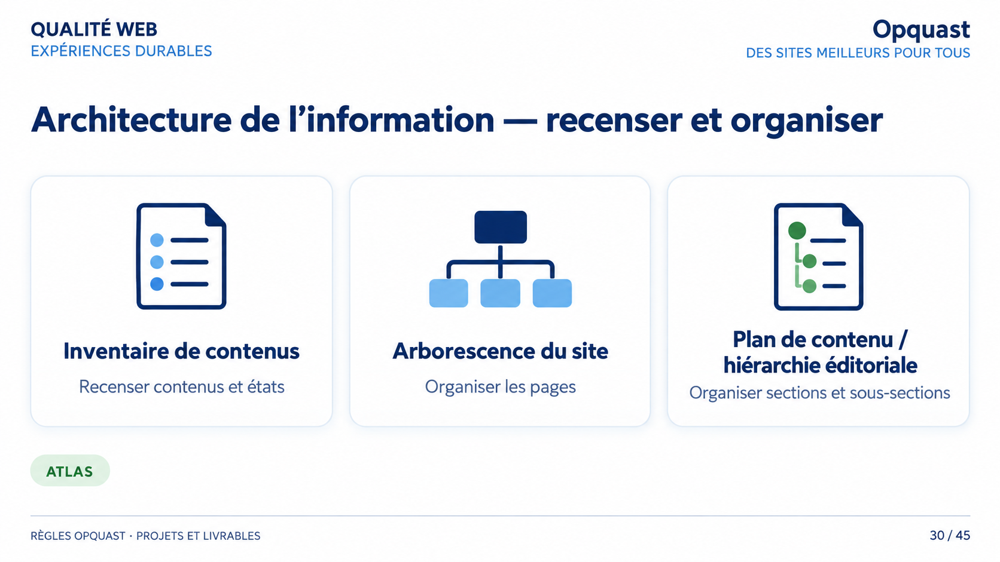
Trois cartes de même statut associent « Inventaire de contenus » à « Recenser contenus et états » ; « Arborescence du site » à « Organiser les pages » ; « Plan de contenu / hiérarchie éditoriale » à « Organiser sections et sous-sections ». Les cartes sont juxtaposées sans flèche entre elles.
4. Phase : Architecture de l’information
- Inventaire de contenus : Fonction dans les sources : Recensement exhaustif du périmètre des contenus, de leurs états et de leurs propriétaires.
- (Absence de terme dédié dans le glossaire).
Organiser les contenus
- Arborescence du site : Définition du Glossaire : « Organisation apparente des pages web d’un site sous forme de rubriques, de sous-rubriques, de tags, etc., telle qu’elle est restituée à l’utilisateur.
- L’arborescence peut être indépendante de l’organisation réelle des contenus sous forme de répertoires sur le serveur ou dans le CMS ».
- (Glossaire Opquast, entrée « Arborescence du site »).
- Plan de contenu / hiérarchie éditoriale : Fonction dans les sources : Structuration des sections et sous-sections d’information en amont de la rédaction.
- (Absence de terme dédié dans le glossaire).
Slide 31 - Architecture de l’information - classer et orienter
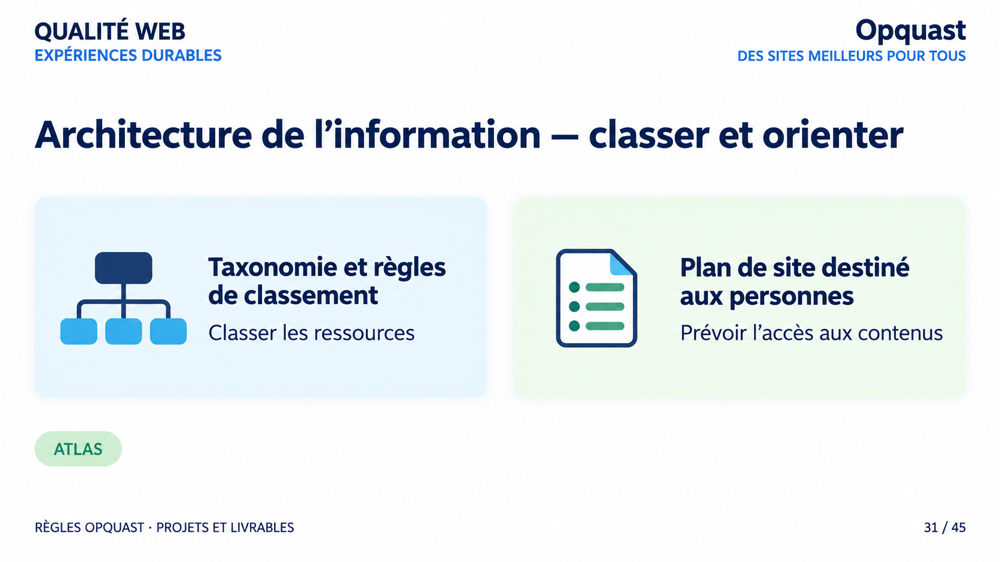
Deux cartes de même statut associent « Taxonomie et règles de classement » à « Classer les ressources » ; « Plan de site destiné aux personnes » à « Prévoir l’accès aux contenus ». Les cartes sont juxtaposées sans flèche entre elles.
4. Phase : Architecture de l’information
- Taxonomie et règles de classement : Fonction dans les sources : Système de classification et de catégorisation des ressources pour en faciliter la recherche.
- (Absence de terme dédié dans le glossaire).
Classer et orienter
- Plan de site (destiné aux personnes) : Définition du Glossaire : « Page ou ensemble de pages dont le contenu reflète l’arborescence des contenus sous forme de listes de liens organisés par rubriques.
- Le plan de site doit donner accès, directement ou indirectement, à tous les contenus du site ».
- (Glossaire Opquast, entrée « Plan de site »).
Slide 32 - Conception fonctionnelle - structurer
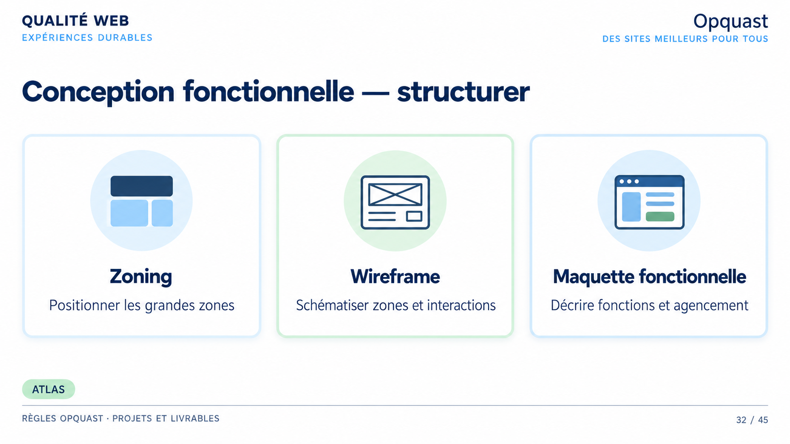
Trois cartes de même statut associent « Zoning » à « Positionner les grandes zones » ; « Wireframe » à « Schématiser zones et interactions » ; « Maquette fonctionnelle » à « Décrire fonctions et agencement ». Les cartes sont juxtaposées sans flèche entre elles.
5. Phase : Conception fonctionnelle
- Zoning : Définition du Glossaire : « Schématisation minimale d’une page web sous forme de blocs ou boîtes afin de déterminer et de répartir les grandes fonctionnalités et les zones principales de son contenu, indépendamment de leurs dimensions, de leurs proportions ou du design graphique ».
- (Glossaire Opquast, entrée « Zoning »).
Définir l’interface
- Wireframe : Définition du Glossaire : « Schéma définissant les différentes zones d’une page web (zoning) et précisant leurs fonctionnalités, leur type de contenu et les types d’interaction, en faisant abstraction du design graphique.
- Le wireframe précède l’étape du maquettage graphique ».
- (Glossaire Opquast, entrée « Wireframe »).
- Maquette fonctionnelle : Définition du Glossaire : « Représentation graphique (esquisses, wireframes, mockups, etc.) des différentes zones et des fonctionnalités d’une sélection de pages du site, sans considération de style.
- La maquette fonctionnelle la plus aboutie est un prototype ».
- (Glossaire Opquast, entrée « Maquette fonctionnelle »).
Slide 33 - Conception fonctionnelle - simuler
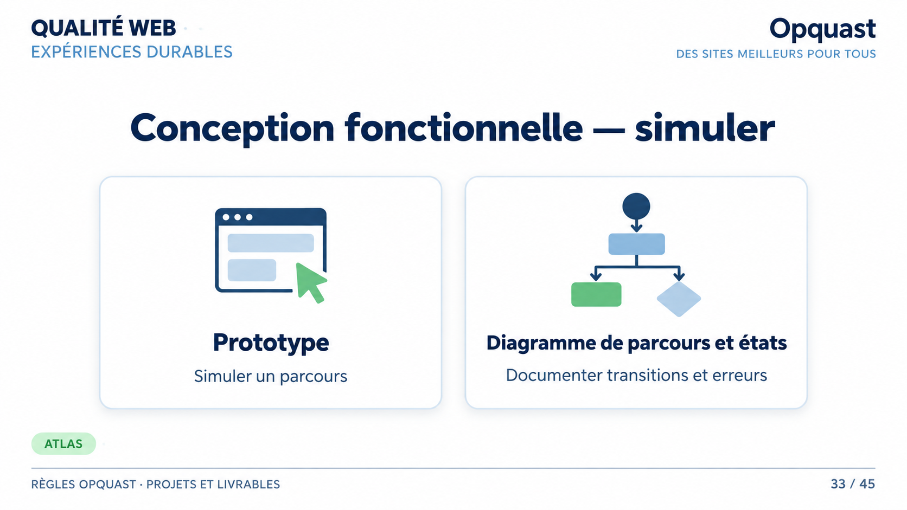
Deux cartes de même statut associent « Prototype » à « Simuler un parcours » ; « Diagramme de parcours et états » à « Documenter transitions et erreurs ». Les cartes sont juxtaposées sans flèche entre elles.
5. Phase : Conception fonctionnelle
- Prototype : Définition du Glossaire : « Le prototype ou wireframe permet de travailler sur la nature et l’emplacement (zoning) des différents composants d’une page.
- Il peut être simplement graphique ou fonctionnel ».
- (Glossaire Opquast, entrée « Prototype »).
Représenter le parcours
- Diagramme de parcours et états (ou Storyboard) : Définition du Glossaire : « Série de croquis ou de diapositives représentant visuellement les interactions et étapes clés d’un parcours utilisateur.
- Il sert à planifier l’ergonomie et les fonctionnalités avant la création graphique ou le développement ».
- (Glossaire Opquast, entrée « Storyboard »).
Slide 34 - Design graphique - rendre cohérent
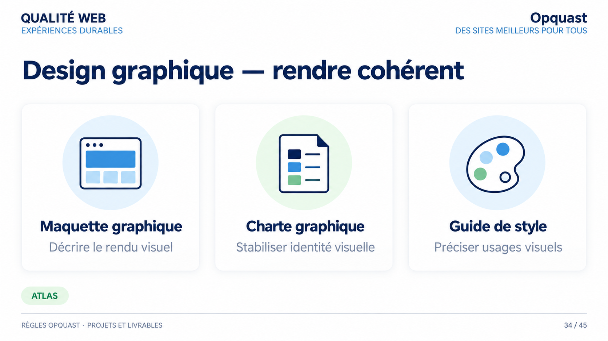
Trois cartes de même statut associent « Maquette graphique » à « Décrire le rendu visuel » ; « Charte graphique » à « Stabiliser identité visuelle » ; « Guide de style » à « Préciser usages visuels ». Les cartes sont juxtaposées sans flèche entre elles.
6. Phase : Design graphique
- Maquette graphique (ou Mockup) : Définition du Glossaire : Représentation graphique haute fidélité décrivant l’aspect final et complet d’une page web (couleurs, typographies, effets) qui servira de base à l’intégration HTML.
- (Glossaire Opquast, entrée « Maquette graphique »).
- Charte graphique : Définition du Glossaire : « Document présentant l’ensemble des signes graphiques qui constituent l’identité visuelle d’une organisation (logo, polices typographiques, palettes de couleurs, etc.), afin de conserver une cohérence graphique en particulier dans ses différents sites web ».
- (Glossaire Opquast, entrée « Charte graphique »).
Documenter les usages visuels
- Guide de style : Fonction dans les sources : Document technique précisant les règles d’usage visuel et les variantes des composants pour les développeurs.
- (Absence de terme dédié dans le glossaire).
Slide 35 - Design graphique - mutualiser et adapter
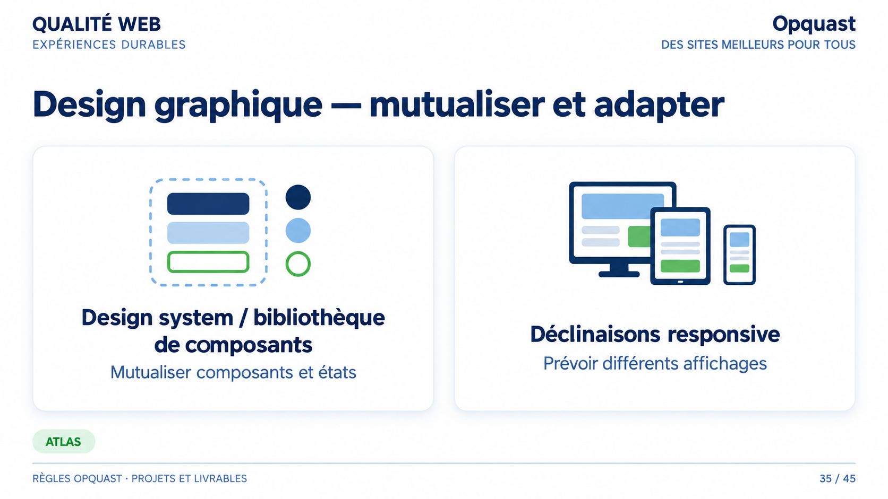
Deux cartes de même statut associent « Design system / bibliothèque de composants » à « Mutualiser composants et états » ; « Déclinaisons responsive » à « Prévoir différents affichages ». Les cartes sont juxtaposées sans flèche entre elles.
6. Phase : Design graphique
- Design system (bibliothèque de composants) : Définition du Glossaire : « Ensemble cohérent de composants, styles et règles visuelles réutilisables dans un projet web ou applicatif.
- Il inclut des éléments tels que boutons, formulaires, couleurs, typographies et icônes, ainsi que leurs comportements et interactions ».
- (Glossaire Opquast, entrée « Design system »).
Adapter l’affichage
- Déclinaisons responsive (Responsive design) : Définition du Glossaire : « Mise en page fluide reposant en particulier sur le recours aux media queries, à une grille fluide et au redimensionnement des images.
- Cette approche permet au navigateur de fournir un rendu adapté selon la taille de l’écran ».
- (Glossaire Opquast, entrée « Responsive design »).
Slide 36 - Développement - produire et versionner
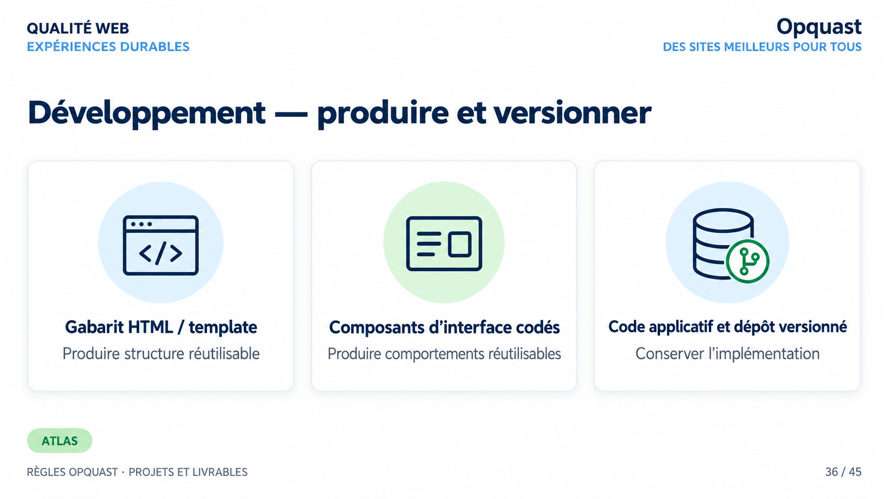
Trois cartes de même statut associent « Gabarit HTML / template » à « Produire structure réutilisable » ; « Composants d’interface codés » à « Produire comportements réutilisables » ; « Code applicatif et dépôt versionné » à « Conserver l’implémentation ». Les cartes sont juxtaposées sans flèche entre elles.
7. Phase : Développement
- Gabarit HTML / Template : Définition du Glossaire : « Patron de mise en page utilisé notamment par les CMS (systèmes de gestion de contenu) et recourant à un langage de script pour définir les types des données qui seront publiées et leur appliquer une structure HTML et une mise en forme CSS ».
- (Glossaire Opquast, entrée « Template »).
- Composants d’interface codés : Définition du Glossaire : Élément interactif de base d’une interface graphique (menus, onglets, fenêtre de dialogue, infobulle, accordéon, datepicker) reposant sur les technologies HTML, CSS et JavaScript.
- (Glossaire Opquast, entrée « Composant d’interface »).
Conserver l’implémentation
- Code applicatif et dépôt versionné (Git) : Définition dans le Glossaire : Système de gestion des versions de code source permettant de suivre les modifications, de gérer les branches et de conserver l’historique d’implémentation.
- (Glossaire Opquast, entrée « Versioning / Git »).
Slide 37 - Développement - documenter et configurer
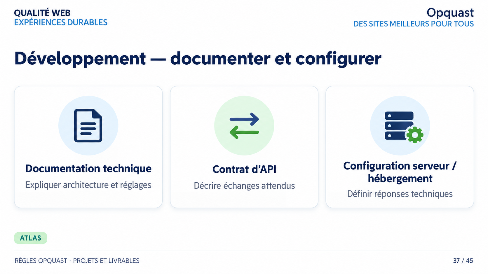
Trois cartes de même statut associent « Documentation technique » à « Expliquer architecture et réglages » ; « Contrat d’API » à « Décrire échanges attendus » ; « Configuration serveur / hébergement » à « Définir réponses techniques ». Les cartes sont juxtaposées sans flèche entre elles.
7. Phase : Développement
- Documentation technique : Fonction dans les sources : Document explicitant l’architecture logicielle, les hypothèses de calcul et les réglages de configuration.
- (Absence de terme dédié dans le glossaire).
Décrire les échanges et l’hébergement
- Contrat d’API : Définition du Glossaire : Spécification des règles, protocoles et structures de données permettant à différentes applications ou systèmes de communiquer de manière standardisée.
- (Glossaire Opquast, entrée « API »).
- Configuration serveur / Hébergement : Définition du Glossaire : Mettre à disposition un serveur configuré (type MIME, en-têtes HTTP, redirections) pour stocker les fichiers et rendre le service accessible sur Internet.
- (Glossaire Opquast, entrée « Hébergement web »).
Slide 38 - CMS et éditorial - préparer la publication
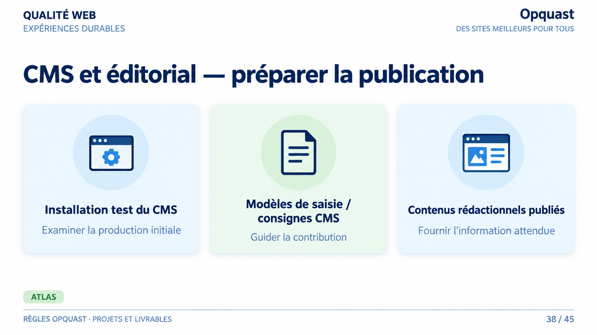
Trois cartes de même statut associent « Installation test du CMS » à « Examiner la production initiale » ; « Modèles de saisie / consignes CMS » à « Guider la contribution » ; « Contenus rédactionnels publiés » à « Fournir l’information attendue ». Les cartes sont juxtaposées sans flèche entre elles.
8. Phase : CMS et éditorial
- Installation test du CMS : Rôle dans les sources : Évaluation d’une installation fraîche du système de gestion de contenu pour mesurer sa capacité native à générer des pages et des gabarits conformes aux règles (Livre, section « Partie 2 - Démarche qualité »).
- Modèles de saisie / Consignes CMS : Fonction dans les sources : Règles, contraintes et gabarits intégrés au CMS pour guider la rédaction et la contribution.
- (Absence de terme dédié dans le glossaire).
Publier les contenus
- Contenus rédactionnels publiés : Définition du Glossaire : « Contenus propres du site, dont il assume la responsabilité pleine, par opposition aux contenus publicitaires, aux publireportages, aux contenus sponsorisés ».
- (Glossaire Opquast, entrée « Contenu rédactionnel »).
Slide 39 - CMS et éditorial - rendre les contenus disponibles
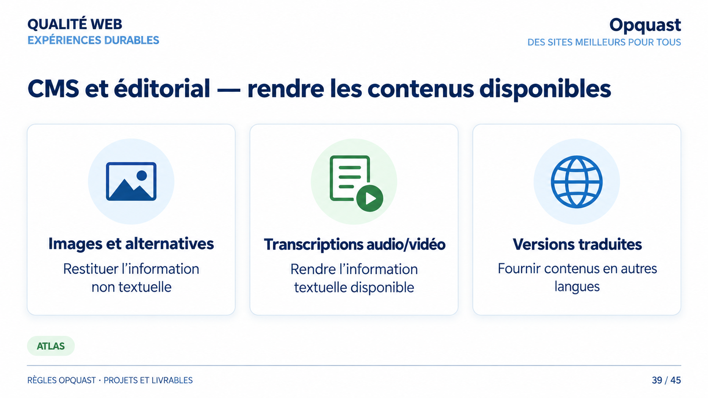
Trois cartes de même statut associent « Images et alternatives » à « Restituer l’information non textuelle » ; « Transcriptions audio/vidéo » à « Rendre l’information textuelle disponible » ; « Versions traduites » à « Fournir contenus en autres langues ». Les cartes sont juxtaposées sans flèche entre elles.
8. Phase : CMS et éditorial
- Images et alternatives textuelles : Définition du Glossaire : Contenu textuel fourni en remplacement des ressources non textuelles (images, pictogrammes) pour être utilisé par les navigateurs ou les lecteurs d’écran.
- (Glossaire Opquast, entrée « Alternative textuelle »).
- Transcriptions audio/vidéo : Définition du Glossaire : « Contenu textuel associé à des objets inclus dans la page (infographies, vidéos, contenus audios) et équivalent à ceux-ci en termes d’information ».
- (Glossaire Opquast, entrée « Transcription textuelle »).
Décliner les contenus
- Versions traduites (Version équivalente) : Définition du Glossaire : Dans un service internationalisé, version linguistique équivalente fournissant la même information que la page initiale.
- (Glossaire Opquast, entrée « Version équivalente »).
Slide 40 - Tests et recette - prévoir et exécuter
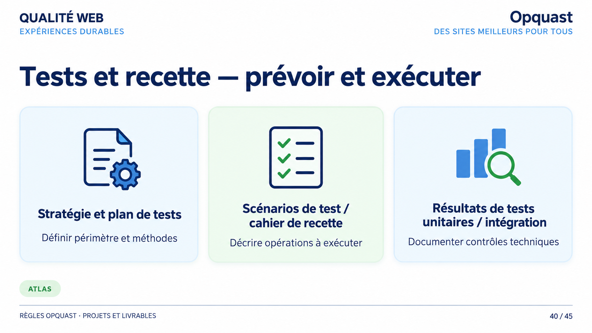
Trois cartes de même statut associent « Stratégie et plan de tests » à « Définir périmètre et méthodes » ; « Scénarios de test / cahier de recette » à « Décrire opérations à exécuter » ; « Résultats de tests unitaires / intégration » à « Documenter contrôles techniques ». Les cartes sont juxtaposées sans flèche entre elles.
9. Phase : Tests et recette
- Stratégie et plan de tests : Rôle dans les sources : Document définissant le périmètre d’évaluation, les cas d’usage à vérifier et la couverture de test (Livre, section « Partie 1 - Comprendre la qualité »).
- (Absence de terme dédié dans le glossaire).
- Scénarios de test / Cahier de recette : Définition du Glossaire : Ensemble d’opérations exécutées lors de la recette pour vérifier la conformité du livrable aux attentes spécifiées dans le cahier des charges.
- (Glossaire Opquast, entrée « Recette »).
Distinguer les niveaux de test
- Résultats de tests unitaires / intégration : Définitions du Glossaire.
- Test unitaire : Vérification du comportement d’une unité de code isolée (fonction, méthode, classe).
- (Glossaire Opquast, entrée « Test unitaire »).
- Test d’intégration : Vérification du bon fonctionnement des interactions entre plusieurs composants, modules applicatifs ou API.
- (Glossaire Opquast, entrée « Test d’intégration »).
Slide 41 - Tests et recette - constater et décider
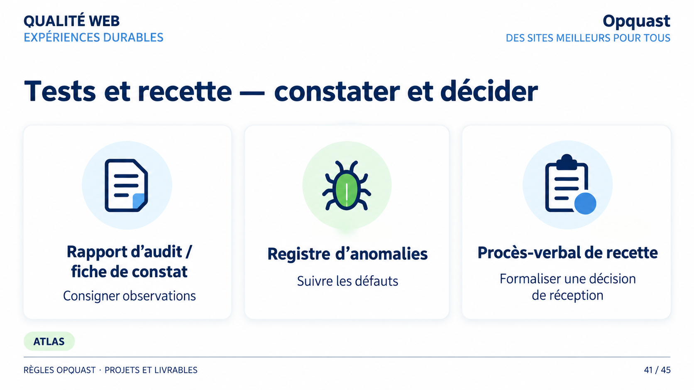
Trois cartes de même statut associent « Rapport d’audit / fiche de constat » à « Consigner observations » ; « Registre d’anomalies » à « Suivre les défauts » ; « Procès-verbal de recette » à « Formaliser une décision de réception ». Les cartes sont juxtaposées sans flèche entre elles.
9. Phase : Tests et recette
- Rapport d’audit / Fiche de constat : Définition du Glossaire : Document consignant les vérifications concrètes et factuelles menées lors du contrôle qualité, précisant l’objet, la méthode, les résultats et les limites d’examen.
- (Glossaire Opquast, entrée « Contrôle qualité (CQ) »).
- Registre d’anomalies (Bug Tracker) : Fonction dans les sources : Outil de suivi traçant l’état, l’impact utilisateur, le responsable et la résolution de chaque défaut relevé.
- (Absence de terme dédié dans le glossaire).
Formaliser la recette
- Procès-verbal de recette : Fonction dans les sources : Acte formalisant la décision officielle d’acceptation du produit et traçant les réserves éventuelles.
- (Absence de terme dédié dans le glossaire).
Slide 42 - Livraison - mettre en production
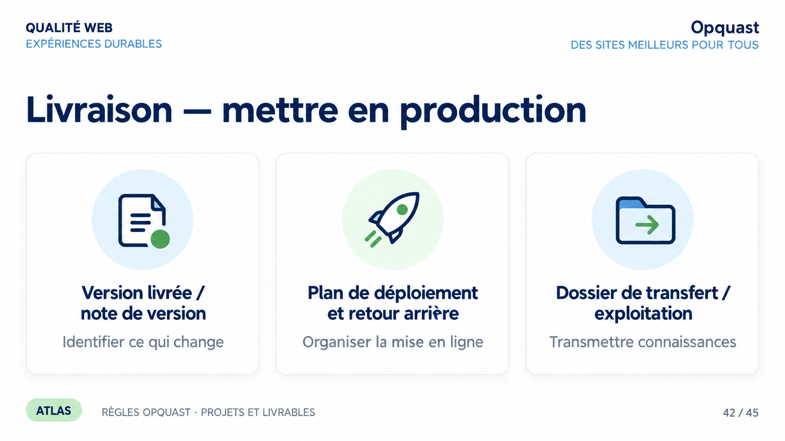
Trois cartes de même statut associent « Version livrée / note de version » à « Identifier ce qui change » ; « Plan de déploiement et retour arrière » à « Organiser la mise en ligne » ; « Dossier de transfert / exploitation » à « Transmettre connaissances ». Les cartes sont juxtaposées sans flèche entre elles.
10. Phase : Livraison
- Version livrée / Note de version (Release Notes) : Fonction dans les sources : Document identifiant l’historique des modifications apportées et le périmètre de la version déployée.
- (Absence de terme dédié dans le glossaire).
- Plan de déploiement et retour arrière : Définition du Glossaire : Procédure organisant le processus de mise en ligne du service sur les serveurs ainsi que les étapes de repli en cas d’erreur.
- (Glossaire Opquast, entrée « Déploiement »).
Transférer vers l’exploitation
- Dossier de transfert / exploitation : Fonction dans les sources : Document transmettant les procédures d’accès, la documentation et les connaissances nécessaires à l’équipe d’exploitation.
- (Absence de terme dédié dans le glossaire).
Slide 43 - Exploitation - suivre dans la durée
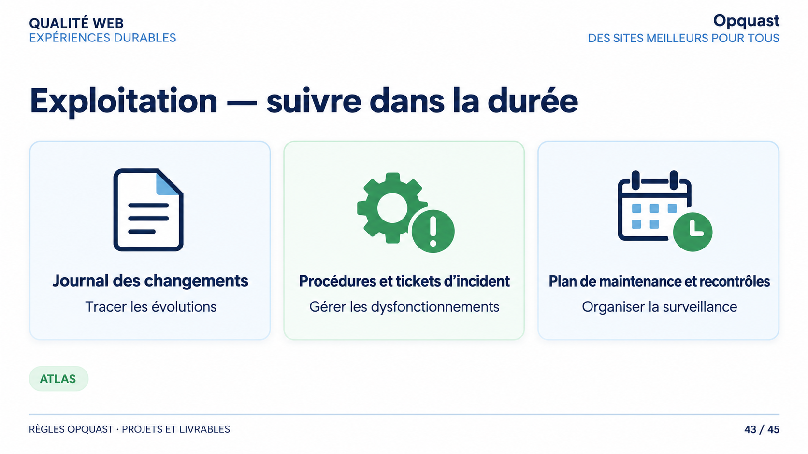
Trois cartes de même statut associent « Journal des changements » à « Tracer les évolutions » ; « Procédures et tickets d’incident » à « Gérer les dysfonctionnements » ; « Plan de maintenance et recontrôles » à « Organiser la surveillance ». Les cartes sont juxtaposées sans flèche entre elles.
11. Phase : Exploitation
- Journal des changements (Changelog) : Fonction dans les sources : Registre consignant les évolutions du code et des contenus en phase de fonctionnement (RUN).
- (Absence de terme dédié dans le glossaire).
- Procédures et tickets d’incident : Fonction dans les sources : Dispositif de signalement et de traitement des dysfonctionnements rencontrés en production.
- (Absence de terme dédié dans le glossaire).
Maintenir et recontrôler
- Plan de maintenance et recontrôles : Définition du Glossaire : Organisation des actions corrective et évolutive visant à optimiser, adapter et surveiller le service après sa mise en ligne.
- (Glossaire Opquast, entrée « Maintenance évolutive »).
Slide 44 - Pilotage - attribuer et suivre
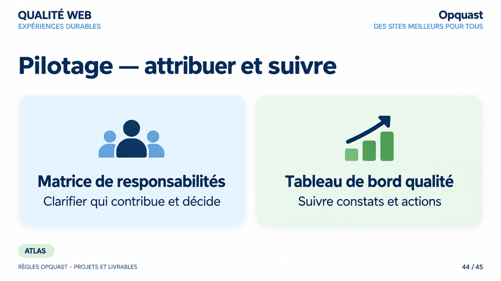
Deux cartes de même statut associent « Matrice de responsabilités » à « Clarifier qui contribue et décide » ; « Tableau de bord qualité » à « Suivre constats et actions ». Les cartes sont juxtaposées sans flèche entre elles.
12. Phase : Pilotage
- Matrice de responsabilités (RACI) : Fonction dans les sources : Outil de gouvernance clarifiant la répartition des rôles, des décisions et des escalades au sein de l’équipe.
- (Absence de terme dédié dans le glossaire).
Suivre la qualité
- Tableau de bord qualité : Définition du Glossaire : Outil de suivi regroupant les indicateurs mesurables de performance et de conformité pour piloter les écarts par rapport aux objectifs.
- (Glossaire Opquast, entrée « Indicateur qualité »).
Slide 45 - Pilotage - améliorer et connaître le parc
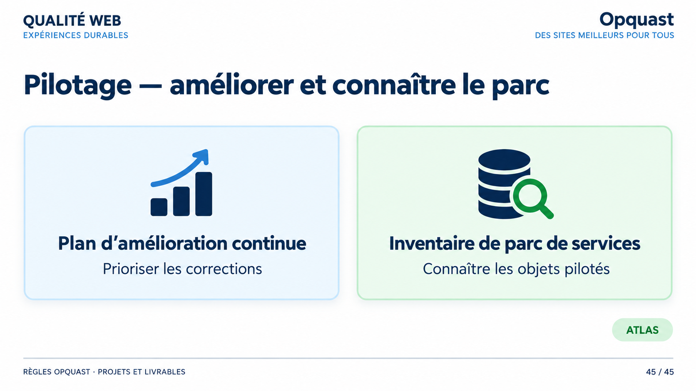
Deux cartes de même statut associent « Plan d’amélioration continue » à « Prioriser les corrections » ; « Inventaire de parc de services » à « Connaître les objets pilotés ». Les cartes sont juxtaposées sans flèche entre elles.
12. Phase : Pilotage
- Plan d’amélioration continue : Définition du Glossaire : Ensemble structuré de mesures et d’initiatives définies pour corriger un écart, résoudre un problème ou optimiser progressivement les processus et les services.
- (Glossaire Opquast, entrées « Amélioration continue » et « Plan d’action »).
Connaître le parc
- Inventaire de parc de services : Rôle dans les sources : Cartographie et recensement de l’ensemble des sites, applications et services numériques constituant le portefeuille d’une organisation (Livre, section « Partie 2 - Démarche qualité »).
- (Absence de terme dédié dans le glossaire).